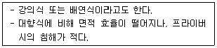
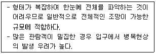
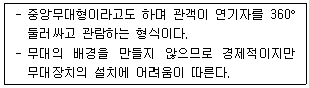
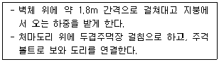
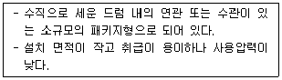
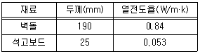

실내건축기사(구) (2012-05-20 기출문제)
1과목: 실내디자인론
1. 다음 설명에 알맞은 사무실의 책상 배치 유형은?

- 동향식
- 벤젠식
- 서가식
- 좌우대향식
(정답률: 83%)

2. 박물관 및 미술관의 전시조명계획에 관한 설명으로 옳지 않은 것은?
- 주광에 근접한 색채 감각을 재현한다.
- 시야 내 고휘도 광원이나 주광창을 설치하지 않는다.
- 자연광의 영향을 강하게 받는 곳은 색온도가 낮은 광원을 사용한다.
- 전시물의 전반조도를 낮추고 균제도를 높여 부분적으로 고휘도가 되지 않도록 한다.
(정답률: 49%)
3. 다음 설명과 같은 특징을 갖는 전시공간의 평면형태는?

- 원형
- 사각형
- 자유형
- 부채꼴형
(정답률: 53%)
4. 펜로즈의 삼각형과 가장 관련이 깊은 착시의 종류는?
- 운동의 착시
- 다의도형 착시
- 역리도형 착시
- 기하학적 착시
(정답률: 77%)
5. 정육면체 공간에 관한 설명으로 옳은 것은?
- 깊이에 관심이 집중된다.
- 높이에 관심이 집중된다.
- 방향성은 중립성을 유지하고 긴장감이 없다.
- 강한 방향서에 따른 극적인 분위기를 갖는다.
(정답률: 78%)
6. 아파트의 평면형식 중 중복도형에 관한 설명으로 옳지 않은 것은?
- 부지의 이용률이 높다.
- 프라이버시가 좋지 않다.
- 각 주호의 일조조건이 동일하다.
- 도심지내의 독신자용 아파트에 적용된다.
(정답률: 63%)
7. 주택에서 부엌의 합리적인 규모 결정과 가장 관계가 먼 것은?
- 가족구성
- 작업대의 면적
- 주택의 연면적
- 작업인의 동작에 필요한 공간
(정답률: 57%)
8. 정지된 인체치수와 동작을 중심으로 한 인간공학적 측면에서 구분한 가구의 종류에 해당하지 않은 것은?
- 간막이 가구
- 작업용 가구
- 수납용 가구
- 인체지지용 가구
(정답률: 64%)
9. 주택의 공간구성 기법 중 원룸 시스템에 관한 설명으로 옳지 않은 것은?
- 수납공간의 부족하므로 이에 대한 고려가 필요하다.
- 공간사용에 있어 융통성이 부족하므로 붙박이 가구 등의 도입이 요구된다.
- 데드 스페이스를 만들지 않음으로써 공간사용의 극대화를 도모할 수 있다.
- 실내에 통행에 필요한 공간을 별도로 구획하지 않으므로 그로 인한 공간손실이 없다.
(정답률: 43%)
10. 다음의 실내디자인 원리 중 인간생활의 기능적 해결과 가장 관계가 깊은 것은?
- 비례
- 패턴
- 조화
- 척도
(정답률: 65%)
11. 실내공간의 계단에 관한 설명으로 옳지 않은 것은?
- 계단의 경사도는 30~35° 정도가 일반적이다.
- 계단의 난간 높이는 500~650mm 정도가 일반적이다.
- 계단은 수직방향으로 공간을 연결하는 상하 통행공간이다.
- 계단은 통행자의 밀도, 빈도, 연령 등에 따른 사용상의 고려가 필요하다.
(정답률: 69%)
12. 현실적 형태 중 자연형태에 관한 설명으로 옳지 않은 것은?
- 자연계에 존재하는 모든 것으로부터 보이는 형태를 말한다.
- 기하학적인 형태는 불규칙한 형태보다 비교적 무겁게 느껴진다.
- 조형의 원형으로서도 작용하며 기능과 구조의 모델이 되기도 한다.
- 단순한 부정형의 형태를 취하기도 하지만 경우에 따라서는 체계적인 기하학적인 특징을 갖는다.
(정답률: 73%)
13. 창의 기본적 기능과 가장 거리가 먼 것은?
- 채광
- 통풍
- 장식
- 환기
(정답률: 91%)
14. 리듬의 효과를 위해 사용되는 요소에 해당되지 않는 것은?
- 반복
- 방사
- 점진
- 대칭
(정답률: 75%)
15. 황금비례로 가장 알맞은 것은?
- 1 : 1.414
- 1 : 1.618
- 1 : 1.732
- 1 : 3.141
(정답률: 81%)
16. 공간의 적정치수 선정방법에 해당하지 않은 것은? (단, α는 적정치수를 끌어내기 위한 여유치수이다.)
- 최소값 +α 의 방법
- 최대값 -α 의 방법
- 목표값 ±α 의 방법
- 조정값 ±α 의 방법
(정답률: 57%)
17. 실내디자인의 영역에 관한 설명으로 옳은 것은?
- 실내디자인의 영역은 건축물의 실내공간을 주 대상으로 하며, 도시환경이나 가로공간에서도 발견된다.
- 실내디자인은 인간의 물리적조건, 환경적 조건, 기능적 조건을 충족함을 목표로 하며, 정서적 조건은 전적으로 의뢰인의 몫이다.
- 실내디자인은 건축공간의 심리적 문제해결이나 독자적인 표현을 대상으로 하며 건축물의 매수나 형태의 디자인을 주 영역으로 한다.
- 실내디자인은 인간생활에 적합한 환경을 구성함에 있어 건축공간의 기능적 측면은 건축의 영역에 해당되므로 이를 고려할 필요는 없다.
(정답률: 77%)
18. 다음과 같은 특징을 갖는 극장의 평면형은?

- 가변형
- 애리나형
- 프로세니움형
- 오픈 스테이지형
(정답률: 78%)
19. 상점의 공간구성 중 판매공간에 해당하지 않는 것은?
- 통로공간
- 서비스공간
- 파사드공간
- 상품전시공간
(정답률: 56%)
20. 의자 및 소파에 관한 설명으로 옳지 않은 것은?
- 스툴은 등받이와 팔걸이가 없는 형태의 보조의자이다.
- 체스터필드는 사용상 안락성이 매우 크고 비교적 크기가 크다.
- 풀업 체어는 필요에 따라 이동시켜 사용할 수 있는 간의 의자이다.
- 세티는 고대 로마시대에 음식물을 먹거나 잠을 자기 위해 사용했던 긴 의자이다.
(정답률: 80%)
2과목: 색채학
21. 실제의 위치보다 가깝게 있는 것처럼 보이는 색을 뜻하는 것은?
- 후퇴색
- 수축색
- 무채색
- 진출색
(정답률: 84%)
22. 영·헬름홀츠 색지각설의 3원색은?
- 빨강(red), 녹색(green), 파랑(blue)
- 시안(cyan), 마젠타(magenta), 노랑(yellow)
- 흰색(white), 회색(gray), 검정(black)
- 빨강(red), 노랑(yellow), 파랑(blue)
(정답률: 64%)
23. NCS 표기법의 “S2030-Y90R”에 대한 설명 중 틀린 것은?
- S는 두 번째 판을 의미한다.
- 20%의 검정 30%의 유채색도이다.
- YR의 혼합비율로 90%의 빨강 색도를 띤 노란색이다.
- 90%의 노란 색도를 띤 빨간색을 뜻한다.
(정답률: 61%)
24. 색채조화에 관한 설명 중 틀린 것은?
- 동일·유사조화는 강렬한 느낌을 준다.
- 보색배색은 색상대비가 크다.
- 대비조화는 동적인 느낌을 준다.
- 보색배색의 눈부심 현상을 없애기 위해서는 간격을 준다.
(정답률: 80%)
25. 다음 눈의 구조적인 기능 설명 중 틀린 것은?
- 간상체는 주로 어두운 빛에 대한 강도는 높고 색을 구별 못한다.
- 수정체는 빛을 굴절시켜서 망막에 이르는 상을 조절한다.
- 맹점은 중추를 통하는 지점에 시세포가 없어서 여기서 모인 상을 볼 수 없는 지점을 말한다.
- 추상체는 주로 망막의 중심에서 벗어난 주변에 분포한다.
(정답률: 49%)
26. 채도에 관한 설명 중 옳은 것은?
- 채도는 흰색을 섞으면 높아지고 검정색을 섞으면 낮아진다.
- 채도는 색의 선명도를 나타낸 것으로 무채색을 섞으면 낮아진다.
- 채도는 색의 밝은 정도를 말하는 것이며, 유채색끼리 섞으면 높아진다.
- 채도는 그림 물감을 칠했을 때 나타나는 효과이며, 흰색을 섞으면 높아진다.
(정답률: 73%)
27. 다음 중 노란색과 배색하였을 때 가장 부드러운 느낌으로 조화되는 색은?
- 회색
- 빨강
- 보라
- 남색
(정답률: 54%)
28. 다음 중 포토샵의 Color Picker에서 빨강을 표현하는 색채시스템이 아닌 것은?
- R=255, G=0, B=0
- H=0, S=100%, B=10⑤
- C=0%, M=99%, Y=100%, K=0%
- L=100, a=100, b=0
(정답률: 37%)
29. 오륜기에서 유럽을 상징하는 색은?
- 녹색
- 황색
- 적색
- 청색
(정답률: 46%)
30. 색 교정, 색 혼합작업을 정확하게 수행하기 위해서는 어떤 시세포가 작용할 수 있는 시각상태로 만들어야 하는가?
- 추상체
- 간상체
- 수평세포
- 양극세포
(정답률: 72%)
31. 먼셀의 표색기호 5G 5/8에 대한 설명 중 옳은 것은?
- 색상 5G, 채도 5, 명도 8
- 색상 5G, 명도 5, 채도 8
- 명도 5G, 색상 5, 채도 8
- 채도 5G, 명도 5, 색상 8
(정답률: 65%)
32. 백화점에서 산 물건을 밖에서 보면 다른 색으로 느껴질 때가 있다. 이는 광원의 어떠한 성질 때문인가?
- 연색성
- 항상성
- 대비현상
- 푸르킨예현상
(정답률: 71%)
33. 미국의 색채학자 저드가 주장하는 색채조화의 4가지에 해당되는 것은?
- 동류성 – 비모호성 – 친근성 - 합리성
- 질서성 – 친근성 – 동류성 – 명료성
- 질서성 – 친근성 – 상대성 – 전통성
- 상대성 – 합리성 – 예술성 – 객관성
(정답률: 75%)
34. 다음 중 모든 디지털화된 이미지의 기본적 색채 특징이 아닌 것은?
- 해상도(resolution)
- 트루컬러(true color)
- 비트깊이(bit depth)
- 컬러모델(color model)
(정답률: 48%)
35. 병치혼합은 다음 중 어떤 화가가 작품에 주로 사용되었는가?
- 피카소
- 뭉크
- 달리
- 쇠라
(정답률: 71%)
36. 다음 중 프르킨예 현상으로 밝은 곳에서 가장 밝게 느껴지는 색은?
- 노랑
- 파랑
- 보라
- 청록
(정답률: 54%)
37. 무채색 계통의 색의 온도감의 요인으로 가장 강하게 작용하는 것은?
- 색상
- 채도
- 명도
- 순도
(정답률: 53%)
38. 다음 중 글자가 가장 가늘게 보이는 배색은?
- 노랑 배경색 위의 파랑 글자
- 검정 배경색 위의 연두 글자
- 진회색 배경색 위의 흰 글자
- 녹색 배경색 위의 노랑 글자
(정답률: 46%)
39. 다음 중 가장 가벼운 느낌을 주는 배색은?
- 녹색 – 검정
- 주황 – 노랑
- 빨강 – 파랑
- 청록 – 녹색
(정답률: 77%)
40. 4도 오프셋 인쇄에 적용된 색채 혼합의 원리는?
- 감법혼색과 가법혼색
- 병치혼색과 가법혼색
- 감법혼색과 병치혼색
- 연속혼색과 감법혼색
(정답률: 63%)
3과목: 인간공학
41. 다음 중 인체 계측치를 응용할 때 주의할 점으로 적합하지 않은 것은?
- 사람은 항상 움직이므로 여유 있는 치수를 설정해야 한다.
- 평균치는 대다수의 사람에게 부적합하다는 점에 유념해야 한다.
- 조절식 또는 극단치의 적용이 부적절한 경우에는 평균치를 기준으로 설계한다.
- 신체 각 부위의 너비와 두께는 체중과 일반적으로 반비례하는 관계이다.
(정답률: 59%)
42. 다음 중 온열요소에 해당하지 않는 것은?
- 기온
- 기습
- 전도
- 복사열
(정답률: 65%)
43. 다음 중 제품디자인에 있어 인간공학적인 고려대상으로 볼 수 없는 것은?
- 인간의 성능 향상
- 사용 편리성의 향상
- 개인차를 고려한 디자인
- 하드웨어의 신뢰성 향상
(정답률: 69%)
44. 속삭이는 말의 음압은 0.002dyne/cm2 정도라고 할 때 이것은 몇 dB의 강도인가?
- 10dB
- 20dB
- 100dB
- 200dB
(정답률: 62%)
45. 다음 중 의자를 디자인할 때 고려해야 할 사항으로 가장 거리가 먼 것은?
- 체압의 분포를 고려하여 좌면의 형을 디자인한다.
- 강의용 좌면의 쿠션은 가급적 푹신한 것이 좋다.
- 자세가 고정되도록 하지 않고, 조정이 용이해야 한다.
- 척추의 허리부분은 정상상태에서 자연적으로 앞쪽으로 휘어 있는 형태를 취하도록 한다.
(정답률: 53%)
46. “소음작업”은 1일 8시간 작업을 기준으로 얼마 이상의 소음이 발생하는 작업을 말하는가?
- 85dB
- 90dB
- 95dB
- 100dB
(정답률: 70%)
47. 다음 중 조정-반응 비율(C/R비)에 대한 설명으로 틀린 것은?
- 조종장치의 움직이는 거리와 표시장치상의 이동거리의 비이다.
- 회전조종장치(knob)의 경우 C/R비는 손잡이 1회전에 상당하는 표시장치 이동거리의 역수이다.
- 최적의 C/R비는 일반적인 공식으로 도출하기 어려우므로 실험에 의하여 구한다.
- C/R비가 작으면 미세조정이 어려우나 조종시간은 짧아진다.
(정답률: 60%)
48. 다음 중 계수형 표시장치를 갖는 온도계가 주로 다루고 있는 정보는?
- 정량적 정보
- 정성적 정보
- 상태 정보
- 묘사적 정보
(정답률: 59%)
49. 다음 중 생채역학에 있어 힘과 모멘트에 관한 설명으로 틀린 것은?
- 평형을 이루는 경우 작용하는 모멘트들의 합은 0이 된다.
- 힘의 작용선상에서 돌아가려는 힘은 거리에 반비례하여 발생한다.
- 힘의 평형은 각 힘의 작용선에 작용한 힘과 반작용들의 합이 0 이라는 의미이다.
- 물체가 정적 평형상태를 유지하기 위해서는 힘의 평형과 모멘트의 평형이 충족되어야 한다.
(정답률: 63%)
50. 다음 중 신호검출이론(Signal Detection Theory)에서 “신호와 소음이 함께 존재하는 경우”에 관한 설명으로 틀린 것은?
- 신호 또는 소음으로 혼동할 확률은 두 음의 분포가 중첩되는 부분의 상대적 크기에 따른다.
- 신호 또는 소음으로 혼동할 확률은 작업자의 판단 기준에 따른다.
- 어떤 작업자라도 100% 정확하게 신호를 검출할 수 없으며, 작업자가 신호 유뮤의 판정시 선택한 기준과는 무관하게 과오의 종류별 빈도가 결정된다.
- 신호 또는 소음로 혼동할 확률은 작업자의 어떤 형태의 오류를 좀 더 묵인할 수 있는가의 기준에 따른다.
(정답률: 30%)
51. 다음 중 조종 장치를 촉감에 의하여 구별할 수 있도록 설계하기 위하여 두께는 최소한 얼마 이상 차이가 나도록 하여야 하는가?
- 0.09mm
- 0.95mm
- 9.5mm
- 95mm
(정답률: 40%)
52. 다음 중 게슈탈트의 지각범주와 관계가 가장 적은 것은?
- 유사성
- 연속성
- 독자성
- 폐쇄성
(정답률: 73%)
53. 음이 한 옥타브가 높아지면 진동수는 몇 배가 되겠는가?
- 2배
- 4배
- 8배
- 10배
(정답률: 36%)
54. 다음 중 인간공학 연구의 3가지 기준 요건과 거리가 먼 것은?
- 적절성
- 무오염성
- 진행성
- 기준척도의 신뢰성
(정답률: 44%)
55. 다음 중 조명과 관계된 단위의 설명으로 옳은 것은?
- 룩스(lx)는 광원이 빛나는 정도이다.
- 와트(W)란 에너지 방사의 시간적 비율이다.
- 루멘(lm)은 단위면적 또는 단위시간에 받는 빛의 양이다.
- 루멘아워(lm/h)는 가시범위의 방사속을 빛의 강도로 환산한 것이다.
(정답률: 46%)
56. 다음 중 에너지대사율(RMR)을 나타내는 식으로 옳은 것은?
- 작업시간의 전체산소소비량 - 작업시간의 기초대사량 / 작업시간 중 안정시 산소소비량
- 작업시간 중 안정시 산소소비량 – 작업시간의 기초대사량 / 작업시간의 기초대사량
- 작업시간의 기초대사량 – 작업시간의 전체산소소비량 / 작업시간 주 안정시 산소소비량
- 작업시간의 전체산소소비량 – 작업시간 중 안정시 산소소비량 / 작업시간의 기초대사량
(정답률: 50%)
57. 다음 중 신체 동작의 유형에 있어 굴곡(flexion)에 대한 동작에 해당하는 것은?
- 팔꿈치 굽히기
- 굽힌 팔꿈치 펴기
- 다리를 옆으로 들기
- 수평으로 편 팔을 수직으로 내리기
(정답률: 75%)
58. 시각피로의 원인 중 망막에 맺히는 상이 두 눈에 차이가 날 경우에 생기는 안정피로의 종류는?
- 조절성 안정피로
- 근육성 안정피로
- 증후성 안정피로
- 부등상성 안정피로
(정답률: 39%)
59. 시력표에서 식별할 수 있는 최소표적의 시각이 2분(‘)이라면 이 사람의 시력은 얼마인가?
- 0.5
- 1.0
- 1.5
- 2.0
(정답률: 59%)
60. 다음 중 피부 감각의 특성에 관한 설명으로 틀린 것은?
- 촉각을 가지고 있다.
- 뇌는 통각을 가지고 있다.
- 통각, 압각, 온각, 냉각을 가지고 있다.
- 같은 크기의 자극이 반복되면 적응된다.
(정답률: 71%)
4과목: 건축재료
61. 공기 중의 탄산가스와 반응하여 경화하는 기경성 미장재는?
- 시멘트 모르타르
- 돌로마이트 플라스터
- 혼합석고 플라스터
- 경석고 플라스터
(정답률: 68%)
62. 다음 중 내수성이 높고 내열성이 매우 우수하며 유리섬유판, 텍스 접착의 용도로 쓰는 접착제는?
- 페놀수지 접착제
- 실리콘수지 접착제
- 요소수지 접착제
- 멜라민수지 접착제
(정답률: 65%)
63. 목재의 방부 처리법에 해당하지 않는 것은?
- 도포법
- 침지법
- 전기법
- 가압주입법
(정답률: 48%)
64. 다음 중 경령골재가 아닌 것은?
- 경석화산자갈
- 자철광
- 응회암
- 용암
(정답률: 41%)
65. 타일형 바닥재 중 리놀륨타일에 대한 설명으로 옳은 것은?
- 흡수신장과 내유성이 크다.
- 내알칼리성이 크다.
- 국압에 대한 흔적이 남지 않는다.
- 잘 부서지지 않아 옥외에서도 사용된다.
(정답률: 34%)
66. 아스팔트계 방수재료에 대한 설명 중 옳지 않은 것은?
- 아스팔트 프라이머는 블로운 아스팔트를 용제에 녹인 것으로 액상을 하고 있다.
- 아스팔트 펠트는 유기천연섬유 또는 석면섬유를 결합한 원지에 연질의 블로운 아스팔트를 침투시킨 것이다.
- 아스팔트 루핑은 아스팔트 펠트의 양면에 블로운 아스팔트를 가열·용융시켜 피복한 것이다.
- 아스팔트 컴파운드는 블로운 아스팔트의 성능을 개량하기 위해 동식물성 유지와 광물질 분말을 혼입한 것이다.
(정답률: 32%)
67. 다음 시멘트 중 강도 발형 특성이 다른 시멘트는?
- 알루미나시멘트
- 플라이애시시멘트
- 초속경시멘트
- 조강포틀랜드시멘트
(정답률: 33%)
68. 금속재료의 특성에 대한 설명으로 옳지 않은 것은?
- 주철 : 탄소량은 2.5~4.5% 정도이고 주조성이 매우 양호한 편이다.
- 납 : 비중이 11.4로 아주 크고 연질이며 전·연성이 풍부하다.
- 동 : 전기전도율과 열전도율이 매우 높으며 산이나 암모니아에 부식되지 않는다.
- 알루미늄 : 콘크리트에 접하거나 흙 중에 매몰된 경우에는 부식되기 쉽다.
(정답률: 76%)
69. 목재의 심재와 변재를 비교한 설명 중 옳지 않은 것은?
- 심재가 변재보다 다량의 수액을 포함하고 있어 비중이 작다.
- 심재가 변재보다 신축이 적다.
- 심재가 변재보다 내후성, 내구성이 크다.
- 일반적으로 심재가 변재보다 강도가 크다.
(정답률: 71%)
70. 소성 점토벽돌의 붉은 색을 결정하는 가장 중요한 요소는?
- 구리
- 산화철
- 아연
- 니켈
(정답률: 68%)
71. 콘크리트의 동결융해 저항성능을 향상시키기 위해 사용되는 혼화제는?
- AE제
- 플라이애시
- 방청제
- 실리카흄
(정답률: 73%)
72. 석재의 일반적인 성질에 관한 설명 중 옳지 않은 것은?
- 불연성이고 압축강도가 크므로 내수성, 내구성, 내화학성이 크다.
- 외관이 장중하고 종류가 다양하나 가공성이 불량하다.
- 인장강도가 커서 장스팬이 가능한 부재를 얻을 수 있다.
- 화강암과 대리석 등은 내화학적으로 불리하다.
(정답률: 50%)
73. 판유리의 성분 중 구성비율이 가장 큰 것은?
- Fe2O3
- CaO
- MgO
- SiO2
(정답률: 70%)
74. 강의 열처리방법과 그 목적의 연결이 옳지 않은 것은?
- 뜨임질 – 인성증대
- 풀림 – 경도증가
- 불림 – 조직개선
- 담금질 – 강도증가
(정답률: 49%)
75. 콘크리트의 블리딩(bleeding)을 억제하기 위한 대책으로 옳지 않은 것은?
- 단위수량을 감소시킨다.
- 다짐시간을 늘린다.
- 포줄란 재료를 적당량 사용한다.
- AE제나 감수제를 사용한다.
(정답률: 46%)
76. 유리섬유를 불규칙하게 상온가압하여 성형한 판으로, 알칼리 이외의 화학약품에 대한 저항성이 있고 설비재, 내외 수장재로 쓰이는 것은?
- 폴리에스테르강화판
- 멜라민치장판
- 페놀수지판
- 염화비닐판
(정답률: 60%)
77. 콘크리트의 크리프에 대한 설명으로 옳지 않은 것은?
- 크리프 계수는 크리프변형/순간탄성 변형의 비로 표현된다.
- 재령이 짧을수록 크리프는 적다.
- 물-시멘트비가 클수록 크리프가 크다.
- 단면치수가 작을수록 크리프는 크다.
(정답률: 40%)
78. 대리석 일종으로 다공질이며 황갈색 반문이 있어 실내장식용으로 사용되는 석재는?
- 사문암
- 트래버틴
- 응회암
- 성록암
(정답률: 73%)
79. 콘크리트에 A.E제를 첨가했을 경우 공기량 증감에 큰 영향을 주지 않는 것은?
- 혼합시간
- 시멘트의 사용량
- 주위온도
- 양생방법
(정답률: 42%)
80. 석재의 구성 광물 중에서 경도가 가장 큰 것은?
- 백운석
- 석영
- 장석
- 방해석
(정답률: 51%)
5과목: 건축일반
81. 다음 중 프랑스 고딕양식의 건축물이 아닌 것은?
- 랑스 대성당
- 아미앵 대성당
- 링컨 성당
- 노트르담 성당
(정답률: 54%)
82. 건축허가 신청 시 에너지 절약계획서를 제출하지 않아도 되는 것은?
- 교육연구시설 중 바닥면적의 합계가 3500m2인 연구소
- 공동주택 중 바닥면적의 합계가 1500m2인 기숙사
- 제 1종 근린생활시설 중 바닥면적의 합계가 600m2인 목욕장
- 바닥면적의 합계가 3000m2인 판매시설
(정답률: 23%)
83. 절충식 지붕틀에서 다음과 같은 특성을 갖는 부재는?

- 지붕보
- 베개보
- 중도리
- 종보
(정답률: 34%)
84. 철근콘크리트보에서 늑근을 쓰는 가장 큰 이유는?
- 축방향력의 종대
- 전단력에 위한 균열방지
- 휨모멘트의 보강
- 주근의 위치를 보존
(정답률: 40%)
85. 문화 및 집회시설(전시장 및 동·식물원 제외) 용도에 쓰이는 건축물의 관람석 또는 집회실의 바닥면적이 200m2 이상인 경우 반자의 높이는 최소 얼마 이상인가?
- 2.1m
- 2.7m
- 3.6m
- 4.0m
(정답률: 57%)
86. 다음 중 각 소방시설의 종류별 연결이 옳지 않은 것은?
- 소화설비 – 옥내소화전설비
- 피난설비 – 자동화재 속보설비
- 소화용수설비 – 소화수조
- 소화활동설비 – 제연설비
(정답률: 64%)
87. 다음 건축물 중 그 주요구조부를 내화구조로 하여야 하는 것은?
- 2층이 노인복지시설의 용도에 쓰이는 건축물로서 그 용도에 쓰이는 바닥면적의 합계가 450m2인 것
- 2층이 의료시설의 용도에 쓰이는 건축물로서 그 용도에 쓰이는 바닥면적의 합계까 300m2인 것
- 위락시설(주점영업의 용도에 쓰이는 것을 제외한다)의 용도에 쓰이는 건축물로서 그 용도에 쓰이는 바닥면적의 합계가 450m2인 것
- 자동차관련시설의 용도에 쓰이는 건축물로서 그 용도에 쓰이는 바닥면적의 합계까 300m2인 것
(정답률: 35%)
88. 로코코 양식의 특징에 대한 설명 중 거리가 먼 것은?
- 공적인 생활을 위주로 한 실내장식에 중점을 둔 양식이다.
- 18세가 프랑스를 중심으로 발전된 양식이다.
- 부드러운 곡선이 디자인 구성의 주조가 되었다.
- 바로크 양식의 장중함이 로코코 양식에서는 세련미로 바뀌었다.
(정답률: 42%)
89. 건축물에 설치하는 헬리포트 설치기준으로 옳지 않은 것은?
- 헬리포트의 길이는 22m 이상으로 할 것
- 헬리포트의 너비는 20m 이상으로 할 것
- 헬리포트의 주위한계선은 백색으로 하되, 그 선의 너비는 38cm로 할 것
- 헬리포트의 중심으로부터 반경 12m 이내에는 이·착륙에 장애가 되는 건축물·공작물 또는 난간 등을 설치하지 아니할 것
(정답률: 53%)
90. 건축물의 3층 이상의 층으로서 문화 및 집회시설의 공연장이나 위락시설 중 주점영업의 용도에 쓰이는 층으로 그 층 거실의 바닥면적의 합계가 몇 m2 이상일 때 옥외피난계단을 설치하여야 하는가?
- 200m2 이상
- 300m2 이상
- 400m2 이상
- 500m2 이상
(정답률: 46%)
91. 네덜란드에서 암스테르담파와 대립한 것으로 단순, 명쾌, 획일, 간결, 객관성을 미학적, 윤리적 기초로 삼은 근대운동은?
- Art Nouveau
- De stijl
- Jugendstill
- Chicago School
(정답률: 60%)
92. 플랫슬래브구조의 특징에 대한 설명 중 옳지 않은 것은?
- 층높이를 낮게 할 수 있다.
- 실내 이용률이 높다.
- 바닥판의 두께가 두꺼워져 고정하중이 증가한다.
- 고층건물에 적당한 바닥구조이다.
(정답률: 41%)
93. 목구조의 맞춤방법 중 걸침턱맞춤이 사용되는 목구조의 접합부분은?
- 왕대공 지붕틀의 ㅅ자로와 평보
- 왕대공 지붕틀의 평보와 왕대공
- 목조마루틀의 멍에와 장선
- 목재벽체의 기둥과 가새
(정답률: 40%)
94. 주심포식 건물의 구성부재가 아닌 것은?
- 보야지
- 평방
- 종도리
- 외옥도로
(정답률: 22%)
95. 건축물에 경계벽 및 간막이벽을 설치함에 있어 소리를 차단하는데 장애가 되는 부분이 없도록 하기 위한 구조기준으로 옳지 않은 것은?
- 철근콘크리트조로서 두께가 10cm 이상인 것
- 무근콘크리트조로서 두께가 10cm 이상인 것
- 석조로서 두께가 15cm 이상인 것
- 콘크리트블록조로서 두께가 19cm 이상인 것
(정답률: 50%)
96. 다음 중 목구조 접합부에 관한 설명으로 옳지 않은 것은?
- 구조재는 될 수 있는 한 적게 깎아낸다.
- 이음과 맞춤은 응력이 가장 큰 곳에서 접합된다.
- 이음, 맞춤의 부분은 응력이 균등히 전달되도록 가공한다.
- 이음, 맞춤의 단면은 응력과 방향에 직각이 되도록 한다.
(정답률: 59%)
97. 다음 중 PC(Precast Concrete)공법의 장·단점에 대한 설명으로 옳지 않은 것은?
- 초기시설투자비가 적게 든다.
- 기후변화에 영향을 적게 받는다.
- 설계상의 제약이 따른다.
- 기계회, 자동화에 의해 품질이 향상된다.
(정답률: 70%)
98. 스테인드 글라스(Stained Glass)에 대한 설명을 중 옳지 않은 것은?
- 르네상스시대가 스테인드글라스 예술의 전성기다.
- 아르누보를 통해 스테인드글라스 예술이 부활하였으나 곧 근대건축운동에 의해 쇠퇴하였다.
- 스테인드글라스는 빛의 투과광을 주로 이용한다.
- 스테인드글라스의 기원은 로마시대 초기의 교회 건물내부에서 찾아볼 수 있다.
(정답률: 33%)
99. 철골구조의 고력볼트접합에 관한 설명 중 옳지 않은 것은?
- 접합부의 강성이 높아서 접합부의 변형이 거의 없다.
- 볼트에는 마찰접합의 경우 전단력이 생기지 않는다.
- 계기공구를 사용하여 죄므로 정확한 검토를 얻을 수 있다.
- 피로강도가 높아 볼트가 풀리기 쉽다.
(정답률: 65%)
100. 田자형 주택에 관한 설명 중 올지 않은 것은?
- 대청이나 마루 공긴아 없다.
- 부엌, 정주간, 방의 온돌기능을 최대한 활용한 주택이다.
- 후면이 북향이 되므로 균등한 일조, 일사를 이루지 못한다.
- 제주도 지방의 독특한 평면 형태이다.
(정답률: 46%)
6과목: 건축환경
101. 점광원으로부터 일정 거리 떨어진 수평면의 조도에 관한 설명으로 옳지 않은 것은?
- 광원의 광도에 비례한다.
- 거리의 제곱에 반비례한다.
- cosθ(입사각)에 비례한다.
- 측정점의 반사율에 반비례한다.
(정답률: 37%)
102. 자연환기량에 관한 설명으로 옳지 않은 것은?
- 풍속이 높으수록 작아진다.
- 실내외의 온도차가 클수록 많아진다.
- 실내외의 압력차가 클수록 많아진다.
- 공기유입구와 유출구의 높이의 차이가 클수록 많아진다.
(정답률: 74%)
103. 주관적 온열요소 중 착의상태의 단위는?
- met
- m/s
- clo
- %
(정답률: 64%)
104. 각종 흡음재에 관한 설명으로 옳지 않은 것은?
- 판진동 흡음재는 저음역의 흡음재로 유용하다.
- 판진동 흡음재는 강성벽의 앞에 공기층을 설치하여 부착시킨다.
- 다공성 흡음재는 재료의 두께를 증가시키믕로서 저주파수에서의 흡음률을 증가시킬 수 있다.
- 다공성 흡음재의 표면을 다른 재료로 피복하여 통기성을 낮출 경우 중·고주파수에서의 흡음률이 높아진다.
(정답률: 47%)
1⑤. 다음 중 음의 3요소에 해당되지 않는 것은?
- 음색
- 음의 폭
- 음의 고저
- 음의 크기
(정답률: 40%)
106. 실내음향설계에 관한 설명으로 옳지 않은 것은?
- 바해가 되는 소음이나 진동을 차단하도록 한다.
- 실내에 반향(echo), 음의 집중, 음의 그림자 등이 발생하지 않도록 한다.
- 직접음과 반사음의 시간차를 가능한 크게 하여 충분한 음 보강이 되도록 한다.
- 강연이나 연극 등 언어를 주사용 목적으로 할 경우 잔향시간은 비교적 짧게 처리한다.
(정답률: 62%)
107. 램프광속 중 조명범위에 유효하게 이용되는 광속의 비율을 의미하는 것은?
- 보수율
- 수용률
- 조명률
- 주광률
(정답률: 41%)
108. 전기설비의 전압 구분에서 저압의 기준으로 옳은 것은?
- 교류 300V 이하, 직류 600V 이하
- 교류 600V 이하, 직류 300V 이하
- 교류 600V 이하, 직류 750V 이하
- 교류 750V 이하, 직류 600V 이하
(정답률: 64%)
109. 유효온도(ET : effective temperature)에서는 고려하나, 작용온도에서는 고려하지 않는 요소는?
- 기온
- 습도
- 기류
- 복사열
(정답률: 21%)
110. 건축물의 에너지 절약을 위한 단열계획으로 옳지 않은 것은?
- 외벽 부위는 외단열로 시공한다.
- 건물의 창호는 태양열 유입을 위해 가능한 크게 설계한다.
- 외피의 모서리 부분은 열교가 발생하지 않도록 단열재를 연속적으로 설치하고 충분히 단열되도록 한다.
- 발코니 확장을 하는 공동주택이나 창호면적이 큰 건물에는 단열성이 우수한 로이(Low-E) 복층유리 등을 설치한다.
(정답률: 68%)
111. 바닥충격음에 대한 차음대책으로 옳지 않은 것은?
- 뜬바닥 구조를 활요한다.
- 투과손실이 작은 재료를 사용한다.
- 쿠션성이 있는 바닥마감재를 사용한다.
- 천장반자 시공에 의한 이중천장으로 설치한다.
(정답률: 58%)
112. 직접조명방식에 관한 설명으로 옳지 않은 것은?
- 조명률이 높다.
- 실내반사율의 영향이 크다.
- 국부적으로 고조도를 얻기 편리하다.
- 그림자가 강하게 생기는 단점이 있다.
(정답률: 54%)
113. 실내의 압력이 외부보다 높아지고 공기가 실외에서 유입되는 경우가 적은 기계환기법은?
- 흡출식
- 풍력식
- 압입식
- 중력식
(정답률: 54%)
114. 다음 설명에 알맞은 보일러의 종류는?

- 입형보일러
- 수관보일러
- 관류보일러
- 주철제보일러
(정답률: 53%)
115. 일조의 확보와 관련하여 공동주택의 인동간격 결정과 가장 관계가 깊은 것은?
- 춘분
- 하지
- 추분
- 동지
(정답률: 65%)
116. 다음과 같은 재료로 구성된 벽체의 열관류율은? (단, 벽체의 내표면 열전달률은 8.3W/m2·K, 외표면 열전달률은 16.6W/m2·K 이다.)

- 0.021 W/m2·K
- 0.043 W/m2·K
- 0.524 W/m2·K
- 1.14 W/m2·K
(정답률: 16%)
117. 다음 중 실내공기 중의 유해오염물질과 발생 근원의 연결이 옳지 않은 것은?
- 벤젠 – 석고보드
- 라돈 – 콘크리트
- 포름알데히드 – 접착제
- 일산화탄소 – 가스레인지
(정답률: 35%)
118. 잔향시간에 관한 설명으로 옳지 않은 것은?
- 반사음과 직접음의 양을 측정하는데 일반적으로 사용된다.
- Sabine의 잔향식에 따르면 잔향시간은 실의 용적에 비례한다.
- 잔향시간은 실내가 확산음장이라고 가정하여 구해진 개념이다.
- 잔향시간을 이용하면 대상 실내의 평균 흡음률을 측정할 수 있다.
(정답률: 30%)
119. 급탕배관의 설계 및 시공상의 주의점으로 옳지 않은 것은?
- 중앙식 급탕설비는 원칙적으로 강제순환방식으로 한다.
- 수시로 원하는 온도의 탕을 얻을 수 있도록 단관식으로 한다.
- 관의 신축을 고려하여 건물의 벽관통부분의 배관에는 슬리브를 설치한다.
- 순환식 배관에서 탕의 순환을 방해하는 공기가 정체하지 않도록 수평관에는 일정한 구배를 둔다.
(정답률: 49%)
120. 건축물의 내부결로 방지대책으로 옳지 않은 것은?
- 벽체의 열관류저항을 낮춘다.
- 단열공법은 외단열공법으로 시공한다.
- 벽체 내부로 수증기의 침입을 억제한다.
- 벽체 내부 온도가 노점온도 이상이 되도록 한다.
(정답률: 50%)